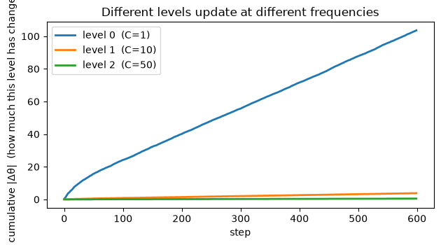

NL-3 aside — a multi-frequency Continuum Memory System
Open In Colab
A companion to NL-3, built to answer one question: the HOPE-training aside used a block it called “CMS” — but that was a single Linear→GELU→Linear MLP updated once per training step, i.e. the degenerate \(k\)=1, single-frequency case (which is just a Transformer MLP, NL-2 §4). It had no continuum of frequencies. So what does the real thing look like? Optional.
This notebook builds it: a chain of memories that update in-context at genuinely different frequencies (NL Eq. 70–71, and the head-wise variant of Eq. 74), instrumented so you can see the levels.
The point to demonstrate concretely:
the levels update at different cadences — a fast level rewrites itself every step, a slow level only at chunk boundaries;
the fast level churns (large cumulative parameter movement) while the slow level stays nearly persistent;
the multi-frequency system works on a non-stationary task, and the continuum modestly beats any single frequency.
A CMS is a set of memories \(\mathcal M^{(f_1)},\dots,\mathcal M^{(f_k)}\) at \(k\) different frequencies. In the head-wise variant (Eq. 74) they run on the same input and their outputs are combined:
The paper leaves \(\text{Agg}(\cdot)\) arbitrary and suggests a learnable weighted sum; we use a plain sum. Level \(\ell\)’s parameters update only every \(C^{(\ell)}\) steps, accumulating their update over the chunk and applying it at the boundary (Eq. 71). \(C^{(\ell)}=1\) is the fastest level (rewrites every step); a large \(C^{(\ell)}\) is a slow, persistent level.
We learn online on a non-stationary target — a linear map \(W\) that drifts a little every step — so there is something for a fast level to track and something for a slow level to stabilize. (We use a linear memory per level for clarity; the paper uses residual-MLP blocks (deep memories, NL-1), but the frequency structure is identical.)
import numpy as npimport torchtorch.manual_seed(0)d =16def run(periods, lr=0.5, T=600, drift=0.01, seed=1, record=False): gen = torch.Generator().manual_seed(seed) W = torch.randn(d, d, generator=gen) / np.sqrt(d) dW = torch.randn(d, d, generator=gen) / np.sqrt(d) * drift # slow drift direction Ms = [torch.zeros(d, d) for _ in periods] acc = [torch.zeros(d, d) for _ in periods] cnt = [0] *len(periods) updates = [0] *len(periods) movement = [0.0] *len(periods) err_curve = [] move_ts = [[] for _ in periods] # per-level cumulative |Δθ| over timefor t inrange(T): W = W + dW # target drifts (non-stationary) x = torch.randn(d, generator=gen) x /= x.norm() y = W @ x err =sum(M @ x for M in Ms) - y # head-wise output (Eq. 74) err_curve.append(err.norm().item())for l, Cl inenumerate(periods): acc[l] += torch.outer(err, x) cnt[l] +=1# accumulate this level's gradientif cnt[l] >= Cl: # chunk boundary -> update level l (Eq. 71) upd = lr * acc[l] / cnt[l] Ms[l] = Ms[l] - upd movement[l] += upd.norm().item() acc[l] = torch.zeros(d, d) cnt[l] =0 updates[l] +=1if record:for l inrange(len(periods)): move_ts[l].append(movement[l])return np.array(err_curve), updates, movement, move_tsperiods = [1, 10, 50]err, updates, movement, move_ts = run(periods, record=True)print(f"CMS with update periods C = {periods} (level 0 fastest, level {len(periods) -1} slowest)")for l, Cl inenumerate(periods):print(f" level {l} (C={Cl:>2}): {updates[l]:>3} updates over 600 steps, cumulative |Δθ| = {movement[l]:.2f}")print(f"\nmean tracking error over 2nd half: {err[300:].mean():.3f}")
CMS with update periods C = [1, 10, 50] (level 0 fastest, level 2 slowest)
level 0 (C= 1): 600 updates over 600 steps, cumulative |Δθ| = 103.59
level 1 (C=10): 60 updates over 600 steps, cumulative |Δθ| = 3.83
level 2 (C=50): 12 updates over 600 steps, cumulative |Δθ| = 0.50
mean tracking error over 2nd half: 0.320
Read the counts: level 0 updates every step (600 updates) and its parameters move a lot (it is constantly rewriting itself to track the drift); level 2 updates only 12 times and barely moves — a slow, persistent store. Three different frequencies, exactly NL-2’s definition of a level. Now plot the cumulative movement over time and the different cadences become a picture.
import matplotlib.pyplot as pltplt.figure(figsize=(6.4, 3.6))for l, Cl inenumerate(periods): plt.plot(move_ts[l], label=f"level {l} (C={Cl})", lw=2)plt.xlabel("step"); plt.ylabel("cumulative |Δθ| (how much this level has changed)")plt.title("Different levels update at different frequencies")plt.legend(); plt.tight_layout(); plt.show()print("fast level: smooth steady climb (updates every step).")print("slow levels: flat plateaus broken by occasional steps (updates only at chunk boundaries).")

fast level: smooth steady climb (updates every step).
slow levels: flat plateaus broken by occasional steps (updates only at chunk boundaries).
2. Does the continuum help? Comparing single frequencies
Compare the 3-level CMS against using only one frequency. On this fast-drifting target a single slow level can’t keep up; a single fast level does most of the work; and the continuum edges out the best single frequency by adding stable levels under the fast one.
print(f"{'config':>18}{'mean tracking err (2nd half)':>28}{'updates/level':>16}")for name, P in [("fast only [1]", [1]), ("slow only [50]", [50]), ("CMS [1,50]", [1, 50]), ("CMS [1,10,50]", [1, 10, 50])]: e, u, m, _ = run(P)print(f"{name:>18}{e[300:].mean():>28.3f}{str(u):>16}")print("\nslow-only can't track the drift; fast-only does most of the work;")print("the continuum [1,10,50] is best — fast level tracks the drift, slower levels add a stable backbone.")
config mean tracking err (2nd half) updates/level
fast only [1] 0.354 [600]
slow only [50] 4.049 [12]
CMS [1,50] 0.347 [600, 12]
CMS [1,10,50] 0.320 [600, 60, 12]
slow-only can't track the drift; fast-only does most of the work;
the continuum [1,10,50] is best — fast level tracks the drift, slower levels add a stable backbone.
What this shows — and the scope
This is a continuum (\(k\ge 2\)), not the \(k\)=1 MLP: three memories updating in-context at three different frequencies (Eq. 71), instrumented so you can see the fast level churn and the slow levels persist. That is precisely the “levels (frequencies)” that the HOPE-training aside’s block lacked.
It works and the continuum helps — on a non-stationary target the multi-frequency system tracks better than any single frequency, modestly.
Scope. The gain here is modest, and on a fast-drifting target the fast level does most of the work — adding levels is a small, consistent improvement, not a dramatic one. The large payoff CMS is built for — resisting catastrophic forgetting across many tasks over a long lifetime (§7.1) — is not something a small linear toy shows cleanly; it needs the full nonlinear, nested machinery, meta-learned initial states, and scale (the same caveat as NL-2 §4 and NL-3 §6). What this notebook does settle is the mechanical question: a CMS has multiple levels at multiple frequencies, and here they are, measured.